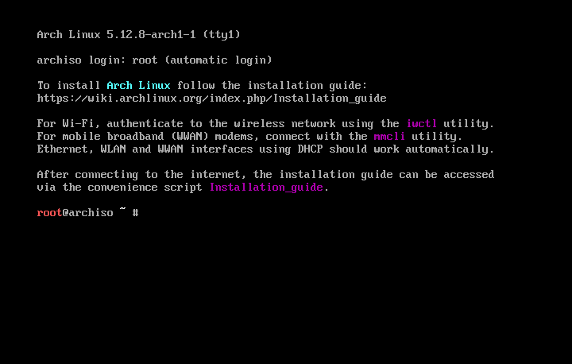
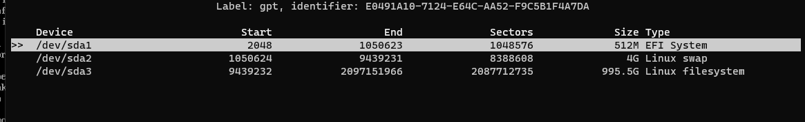
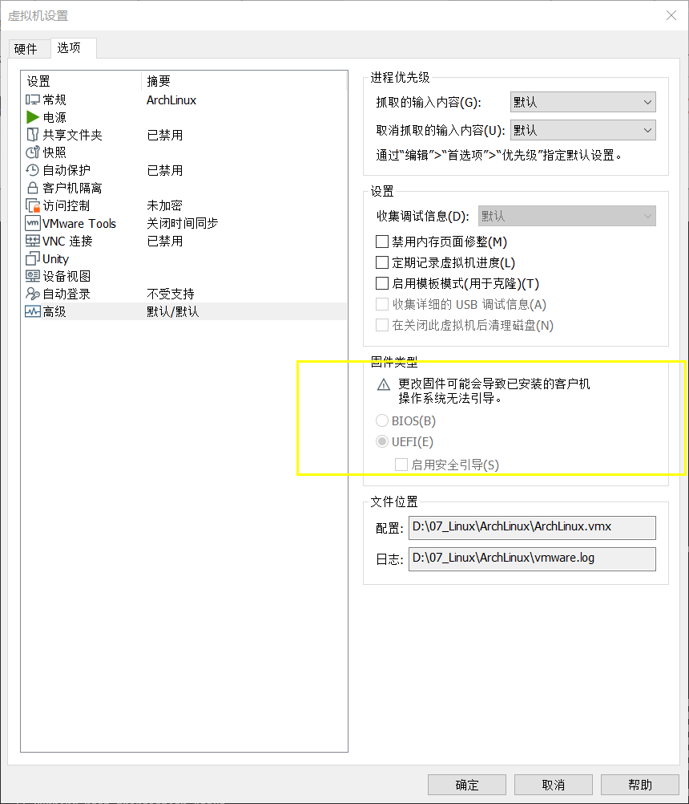

ArchLinux
虚拟机安装
-
VMware 安装ArchLinux

-
分区
1
2
3
4
51. 1M分给GRUB 作为bootLoader
2. 500M 分给EFI
2. 剩余空间分给存储

-
挂载
1
2
3
4
5
6
7
8
9mkfs.ext4 /dev/sda3 # 根据实际分区设置
mkswap /dev/sda2 #没有设置swap分区则不需要
mkfs.vfat -Fat32 /dev/sda1
mount /dev/sda3 /mnt #挂载
swapon /dev/sda2 #启用swap分区
mkdir -p /mnt/boot/EFI
mount /dev/sda1 /mnt/boot/EFI修改vmware设置高级设置,启动设置EFI启动

-
修改下载源
1
2
3
4vim /etc/pacman.d/mirrorlist
#最顶端添加
Server = https://mirrors.bfsu.edu.cn/archlinux/$repo/os/$arch
sudo pacman -Syy -
安装系统和基本应用
1
pacstrap /mnt base linux linux-firmware base-devel vim networkmanager grub sudo openssh
-
配置系统
1
2genfstab -U /mnt >> /mnt/etc/fstab
arch-chroot /mnt1
2
3
4
5
#配置时区
ln -sf /usr/share/zoneinfo/Asia/Shanghai /etc/localtime
hwclock --systohc1
2
3
4
5
6
7
8
9
10
#配置语言
vim /etc/locale.gen
#删除en_US.UTF8 前的#
...
en_US.UTF8
...1
2
3
4
5
6
7
8
9
10
11
12
13
14
15
16
17
#添加en_US.UTF-8
locale-gen
vim /etc/locale.conf
···
en_US.UTF-8
···
#添加archlinux
vim /etc/hostname
···
archlinux
···1
2
3
4
5
6
7
8
9vim /etc/hosts
#配置hosts文件
127.0.0.1 archlinux
::1 localhost
127.0.1.1 archlinux.localdomain archlinux1
2
3#设置密码
passwd
#输入密码1
2
3
4
5
6
7
8
9
10
11
12
13
14
15
16
17
18
19
20
21
22#配置GRUB
grub-install --target=x86_64-efi --bootloader-id=GRUB --efi-directory=/boot/efi --no-nvram --removable
grub-mkconfig -o /boot/grub/grub.cfg
#添加普通用户
useradd -m
passwd $userName
#输入密码
EDITOR=vim visudo
#设置
$userName ALL=(ALL) ALL
#配置自启动
#Systemctl enable NetworkManager.service
#Systemctl enable sshd
exit
umount -R /mnt
reboot
配置
桌面配置
-
Xfce
1
2
3
4
5
6
7
8
9
10
11
12sudo pacman -Syu xfce4 xfce4-goodies xorg
sudo pacman -Syu sddm
sudo pacman -Syu xorg-xinit
cp /etc/X11/xinit/xinitrc ~/.xinitrc
#将exec startxfce4 添加到xinitrc末尾
vim ~/.xinitrc
...
exec startxfce4
... -
中文字体
修改locale.gen
删除
zh_CN.UTF-8前的#1
2sudo pacman -S wqy-microhei
sudo locale-gen设置图形界面中文
修改
.bashrc：每次使用终端登录时读取并运用里面的设置。.xinitrc：每次使用 startx 或 SLiM 启动 X 界面时读取并运用里面的设置。.xprofile：每次使用 GDM 等显示管理器登录时读取并运用里面的设置。
添加下列文本
1
2
3export LANG=zh_CN.UTF-8
export LANGUAGE=zh_CN:en_US -
tab补全
时间设置
1 | tzselect |